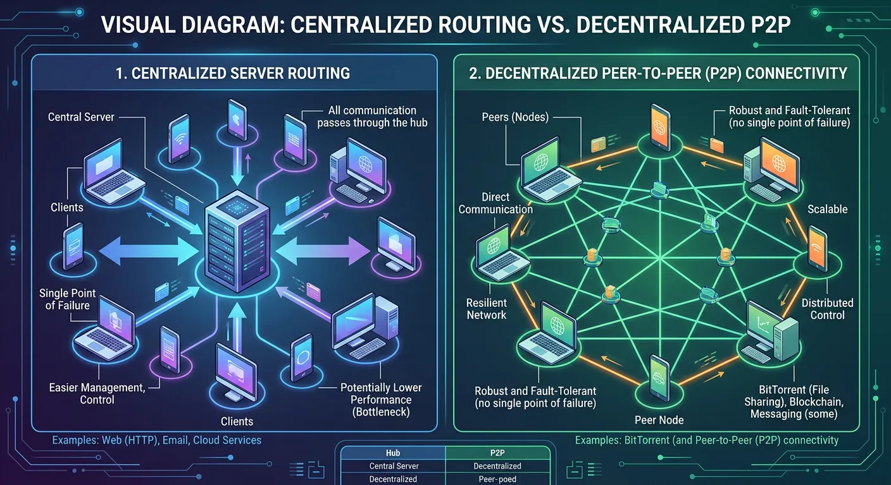
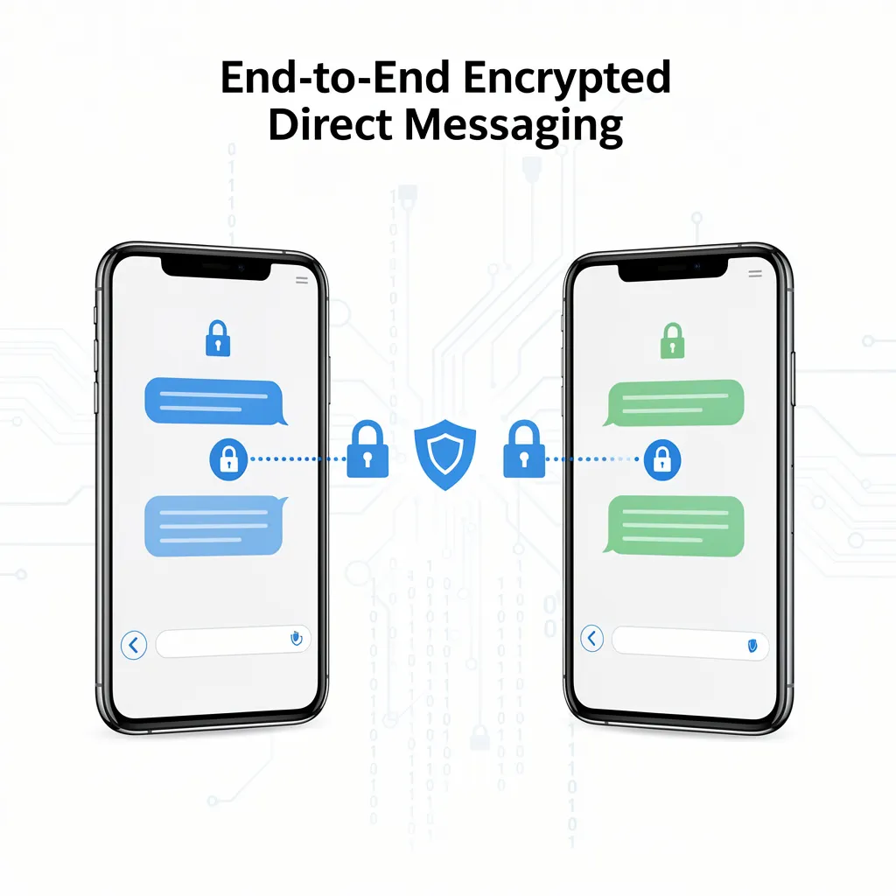
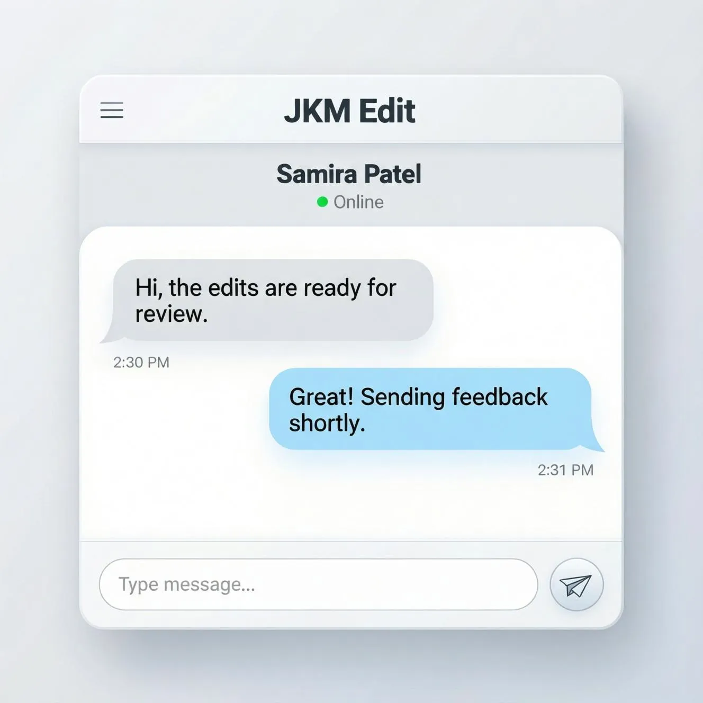

Peer-to-Peer Chat — Secure Direct Communication Without Middlemen
Experience Private, Instant, and Decentralized Messaging With Modern Peer-to-Peer Chat Technology
Written by JKM Edit Team
Published on May 18, 2026
8 min read
Introduction
In today's digital world, online communication is a fundamental part of our everyday lives. Whether it's discussing business deals, sharing files, providing customer support, or collaborating with colleagues, messaging is an essential element of our digital workflows. Despite their importance, conventional messaging platforms often use centralized servers to store user data, communication logs, and metadata. This can lead to a range of privacy, surveillance, security, performance, and third-party control issues.
Enter peer-to-peer chat technology, which enables direct communication between users without a single centralized server to route the messages. Peer-to-peer communication eliminates exposure of information due to centralized server use and improves communication speed and efficiency. Peer-to-peer chat allows users to exchange messages, media, files, and information directly, through encrypted communication channels, with one another, unlike centralized servers.
Peer to Peer chat at JKM Edit is a bridge to high-quality, low-latency, private, professional communications. Whether you are looking for temporary secure messaging, private conversations, internal communications, or fully decentralized messaging workflows, Peer to peer Chat is the antidote to cumbersome, cloud-based information routing.
What is Peer-To-Peer Chat?
Peer to peer chat is a communication where a two or more users can communicate with each other directly, rather than through a server that routes and stores all your messages. In plain language, cloud-based messaging services carry and hold message data on external servers instead, but in a peer to peer chat messages are transferred directly from device to device.

This lets you reduce dependency on centralized infrastructure while affording:
Better communication privacy
More data ownership
Higher transfer speed
Less network traffic
No more bottleneck servers
Secure direct communication
Types of peer to peer technologies
Secure messaging
Collaboration
Gaming system
Blockchain Communication
File sharing system
Decentralized system
Enterprise communication tools
The advanced communication technology of Peer-to-Peer chat is readily available through JKM Edit's user-friendly access to your business. Don't allow third party servers to limit your communication capabilities. Secure Direct Communication with JKM Edit Peer-to-Peer Chat. Chat Securely with JKM Edit P2P Chat. Just Click Here.
Users communicate directly without much reliance on a central message store.
2. More Private Communication
Communications are more private as they don't need to pass through a central store.
3. Instant Messaging
Peer-to-peer communication architecture reduces a lot of delay on routes that aren't necessary, communication moves faster.
4. Secure Temporary Group Chats
Secure temporary group chat rooms allow for sensitive topics or project based chats.
5. Light Weight
Platform can run optimized with minimal resource expenditure.
6. Device-to-device
Direct communication between any two connected devices.
7. Easy to Use Professional UI
Distraction free platform and easy to use for personal and business communication.
8. Cross Platform
Individuals can join communication sessions from any modern device and browser.
How does P2P Chat work
Peer-to-peer architecture and the decentralized networking is vastly different from standard server-client communications. All messages cannot be routed through one central processing server but devices can establish a direct communication session.
Typical steps for a peer-to-peer network are:
User requests chat session
Secure request is generated
Direct communication is established
Messages are instantly transmitted
Secure transmission of data between peers
Close connection when communication is finished
This reduces useless dependence on a server while improving communications.

Why Privacy Matters in Digital Communications
The modern internet consumer is increasingly concerned about the potential:
Data collection
Advertising stalking
Communication snooping
Data leaks
Cloud storage security
Unauthorized data access
Some traditional communication systems keep logs, conversation history, and/or metadata for long periods of time. Peer-to-peer communication can limit this exposure by reducing data that unnecessarily needs to be stored. JKM Edit is based on principles of privacy focused communication to allow users to interact more securely.
Benefits of Peer-to-Peer Chat Platforms
Faster Communications
Less routing for communications means lower latency.
Greater Security
Fewer servers means less surface area to attack.
Increased Reliability
Peer networks can still work even if a centralized infrastructure is down.
Dependence on Heavy Infrastructure Reduced
Individuals, teams, and organizations are reduced in their dependency on heavy investment in centralized cloud infrastructure.
Reduced Cost
Organizations can cut communications cost, because they no longer have to track how they use the infrastructure.
More Control
Users have more power over the communications sessions they initiate and with whom.
Secure, Private Communication Between Professionals
Secure, private, peer-to-peer communication has many professional use cases.
Online business activities
Businesses and teams can collaborate on projects via limited-time communication sessions.
Freelancing
Freelancers can collaborate with their clients via temporary private sessions.
Distributed team coordination really should improve the communication efficiency at Distributed teams
Direct on call/technical support temporarily
Technical support sessions create temporary communications sessions.
Secure Adjust coordination
Secure coordinated using good coordination work flows.
What makes JKM edit talk to talk so good to choose?
Easy effortless
Many decentralised solutions are too technical to use. JKM Edit provides an easier interface so use it as little possible.
Secure aware-modern new design
Everything in the platform works to secure making a better way to communicate.
Better
Providing a better professional user experience and not the past "old Microsoft Office" like interfaces.
Better performance
The platform prefers to fast lightweight communication instead of heavy bloated applications.
Even easier
The platform allows the users to even more easy build communications sessions without heavy configuration.
JKM edit talk to talk vs a collaborative app vs a generic P2P communications platform
Feature
JKM edit talk to talk
Traditional P2P platforms
P2P generic platforms
Direct talk to talk
Yes
Limited
Yes
Privacy is high
Yes
Medium
Medium
Lightweight interface
Yes
Often messy
Varies
Easier configuration
Yes
Yes
Often complex
Modern UI
Yes
Yes
Limited
Allow temporary sessions
Limited
Varies
Available in the browser
Yes
Limited
Easier To use
Yes
Moderate
Poor
What about traditional messaging or talk to talk?
They all come with their set drawbacks, such e.g.
Excessive data collection
Excessive server fuctionality
Privacy concerns
Data retention policy
Ads supported
Excessive resources consumption
Communication bottlenecks
As such, p2p communication protocols provide a solution to one or more, of those drawbacks. It allows direct communication and solves some central functions necessary to initiate communication.
Peer to Peer communication some security benefit
More storage points not faire value today
You have fewer centralized place of storage, there are less attack vectors
Better data isolation
There is still good isolation between participants during sessions.
Less data meta data
There might be less collection of unnecessary data meta data in p2p architectures.
Direct to secure sessions
There is direct connections between users instead of such an array of hops between multiple servers.
Best security of communication online
Here is how you can guarantee best possible security of your channel of communication
Use trustworthy solutions
Do not loose the use of sensitive credentials
Validate the user in session
Use temporary sessions in case of possibility
Keep your device updated
Beware of openness of channel
Do not use public unsecured networks
The communication future is only getting more and more towards peer to peer communications
The future of the internet is to become increasingly decentralized. With the growing use of blockchain and distributed networks and decentralized applications, peer to peer communication is becoming more and more needed to achieve:
More digital autonomy
More user control
More privacy
Less infrastructure dependency
Better distributed communication
With increasing worries about privacy, peer to peer systems are going to play an even bigger role in many areas.
JKM Edit provides you a user wise, technically sound communication
JKM Edit offers a technically sound and user friendly peer to peer chat tool. JKM Edit doesn't want users to see a full-blown network, but instead Simple. Fast onboarding. Seamless communication. Professional design. Little distraction. Solid performance. This balance makes it perfect for both beginners and experts.

FAQ
Peer-to-peer chat is a communication method where users connect directly instead of relying entirely on centralized servers.
Peer-to-peer systems can improve privacy and reduce centralized data exposure when implemented correctly.
The platform is designed to minimize unnecessary centralized communication dependency.
Yes. Businesses can use it for secure internal communication and collaboration.
Modern browser-based systems often do not require installation, running directly from your web browser.
Secure Conversation Ready?
Secure a single use, decentralized chat right now, from anywhere in your browser. Enter a Chat